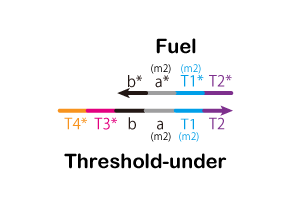

Dry Experiment
We simulated by a numerical calculation software Matlab[13](This can deal with mismatched base pair but other simulation tools cannot).
First, we checked that a seesaw gate is able to control a time for ON state of DCC.
The simulation is done only in the green area of Figure 1.
We simulated time-dependent concentration change of Releaer in the case of
initial concentrations of Signal2 and Gete2 are 100nM and, an initial concentration of Threshold is 20, 50, 80nM.
As shown in Figure 2, we recognized that time dependent concentration change of the output depends on
initial concentration of Threshold.
{kind=link}
Figure 1 : Simulation Area
{kind=link}
Figure 2 : Delay by the Seesaw Gate
Similarly, as shown in Figure 3, We simulated time-dependent concentration change of DCC(ON),
when innitial contcentrations of Input, Gate1, Gate2 and DCC(OFF) are 100nM and,
an initial concentration of Threshold is 20, 50, 80, 100nM.
As shown in Figure 4, we recognized that the larger the initial concentration of Threshold is,
the longer the time of ON state is and the more DCC(ON) is generated.
Moreover, when the initial concentration of Input is smaller than the initial concentration of Threshold,
it was confirmed that DCC is always ON state.
{kind=link}
Figure 3 : Concentration of Simulation
{kind=link}
Figure 4 : Output of the DCC(ON)
We have to consider what the initial concentration of ‘Threshold’ not to kill healthy cells,
but now we have no idea about the concentration difference between normal cells and cancer cells.
Therefore the initial concentration haven’t been decided. In the above simulatoins, we set the initial concentraiton of 'Threshold' to make result clear.
Material & Methods
Simulation conditions
We set the binding rate constant (kf) based on toehold length as follows.
If toehold_length ≤ 6
kf = 5.0×10n-1[M-1s-1]
else
kf = 3.0×106[M-1s-1]
Where
n : toehold_length
Type of Strands
We designed the strands shown in Figures 5~9.



{kind=link}

.gif)
Additionally, we designed DNA sequences using NUPACK.
The DNA sequences are shown in Table 1.
NUPACK is able to design DNA sequences and evaluate their secondary structures at a room temperature.
{kind=link}
Method of Experiment
We will introduce the ways to introduce DNA circuits into cells here.
The ways are three types. They are a chemical method called transfection, a physical method called electroporation
and an biological method called virus vector.
They have each advantage and each disadvantage.
Accordingly, we should take a selectiton along the purpose of experimants.
In this time, we used the electroporation method whitch is physical method[14].
The electroporation method makes a hole in a cell membrane temporarily using electric pulse
and introduces DNA or some materials into the cell through the hole.
In additon, this method needs to destroy a cell wall of E. coli in advance.
A reason we chose this method is it is known that its efficiency of introducing gene is higher than other methods
and we are able to apply for various cells using it(Figure 10).
{kind=link}
Figure 10 : Electroporation Method